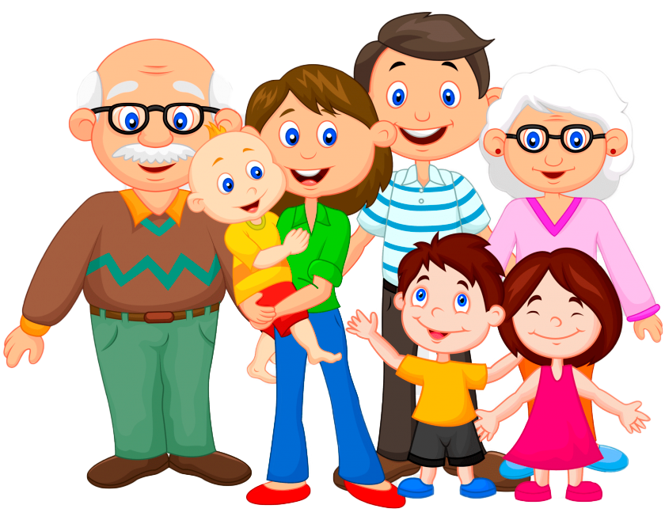

Мета подорожі
Як відомо, осінь - це пора врожаю, овочей та фруктів, але також і важкої пряці. Сергійко, Марічка та Дмитрик поїхали разом з батьками допомагати по господарству та весело провести час разом в дружньому сімейному колі.
Почалась золота осінь, коли вся природа навкруги починає міняти своє забарвлення. Сергійко, Марічка та наймолодший Дмитрик поїхали разом з батьками до в село бабусі Наталки та дідуся Миколи.
Як відомо, осінь - це пора врожаю, овочей та фруктів, але також і важкої пряці. Сергійко, Марічка та Дмитрик поїхали разом з батьками допомагати по господарству та весело провести час разом в дружньому сімейному колі.